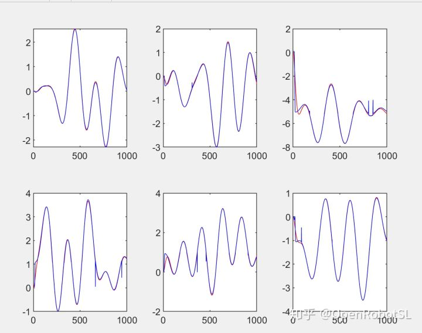
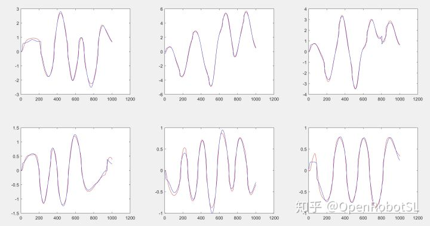
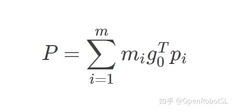
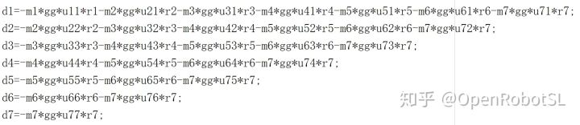
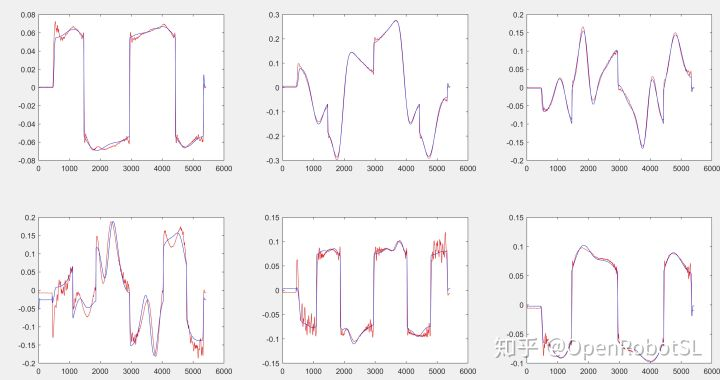

Home
本文转载自： https://zhuanlan.zhihu.com/p/339007238
本菜从工程实现角度和新手入门来介绍力控和动力学辨识拖动问题，高手勿喷啊~！
（首先给自己打个科研小广告，本菜私人学生小团队正在做，XX最优轨迹规划，有志同道合的小伙伴希望私下交流哈）
机械臂力控方案（以下方案都是本菜实际用过的）：
1基于电流环控制，传统的工业动力学辨识，电流稳定性与控制品质或者辨识效果有很大关系
2.基于末端六维力传感器，就是导纳控制，可以参考我之前代码很容易实现末端的柔顺控制。
3.基于关节力矩传感器，替代电流辨识，虽然数值稳定，但是仍然需要辨识动力学
如果单纯从控制稳定性和工程应用角度来讲
针对末端任务肯定是 六维力最好，有力反馈精度。如果考虑到人机协作那么关节力矩优势就出来了，可实现连杆上的柔顺。最后才是电流，因为这个精度和干扰，包括摩擦力很难说。
下面附上我用电流和力矩传感器分别做的全动力学辨识效果图，六维力传感器大家已经司空见惯了。（这部分为本菜论文内容暂时不做介绍，干货在下面）
下图基于力矩传感器全动力学辨识

下图基于电流全动力学辨识

干活来了~！
好了，现在来告诉大家如何工程或者入门级别实现动力学辨识
首先我们要知道机器人动力学模型是MCGF形式，M惯性，C耦合力，G重力，F摩擦力，那么在拖动的时候机械臂是出于低速状态，静止的时候就是速度加速度为0，所以MC几乎是没有影响的，那么只需要辨识重力G+摩擦力F就可以了。
是的，你没听错，那么如何辨识呢，首先基于标准DH建模，拉格朗日动力学建模就能帮我门建立出机器人G重力项，而且非常简单，可以看到公式


P（程序中d）为重力势能，是不是灰常简单呢，里面只有质量m，重力加速度g0(gg)，质心位置p(r),上面还少了Uii旋转变换矩阵(程序中Uii)，大家可以看书哈。 那么你把这个表达式仔细看一下，会发现他最后展开结果就是m, mx,my,mz的线性组合，所以直接可以用最小二乘辨识有木有！是不是灰常简单！
tau=W*P
W是系数只与关节位置有关，通过U旋转变换可以获取，P就是上面的质量和质心未知参数。
最后大家补一个摩擦力就行了！
还需要注意的是：我们因为只需要辨识重力，所以机械臂在获取运动轨迹数据的时候一定要低速运行，避免激发出惯性和耦合力项！
好了现在大家可以下手试试啦，下面给他加看看只辨识重力+摩擦力的结果，实际拖动会非常自如。

希望大家把自己成功辨识和拖动实现发出来开森开森~~~！
======================================================================
我的测试结果及程序
下面是我测试的代码：